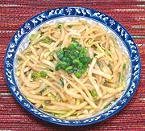

|
Kohlrabi SaladChina - Sichuan - Xiang You Pie Lan | ||||
| Serves: Effort: Sched: DoAhead: |
5 salad ** 45 min Yes |
This is a simple but delightful appetizer salad, with interesting flavor and a lightly crunchy texture. It's also very easy to make, vegetarian, and can be made well ahead. | |||
|
1-1/4 1/2 ------- 2 1/2 2 1 1/4 ------- 3 |
# T --- cl T t t t --- |
Kohlrabi (1) Salt -- Dressing Garlic Soy Sauce Black Vinegar (2) Sesame Oil, dark Sugar -- Garnish Scallion |
Make - (45 min - 15 min work)
|